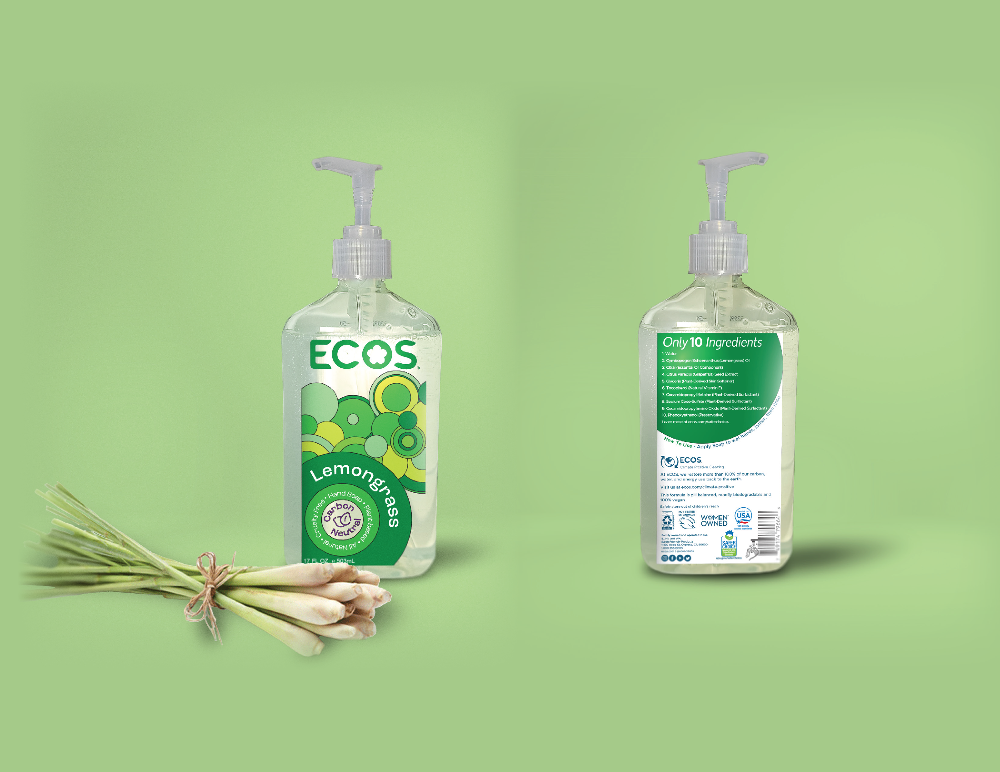
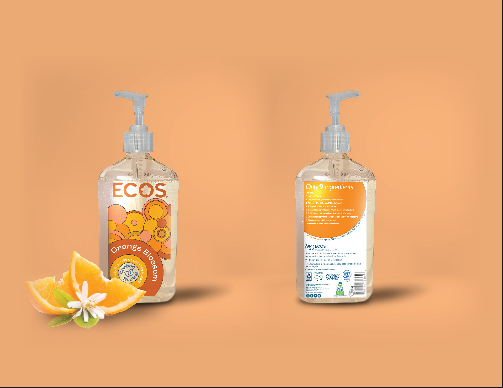
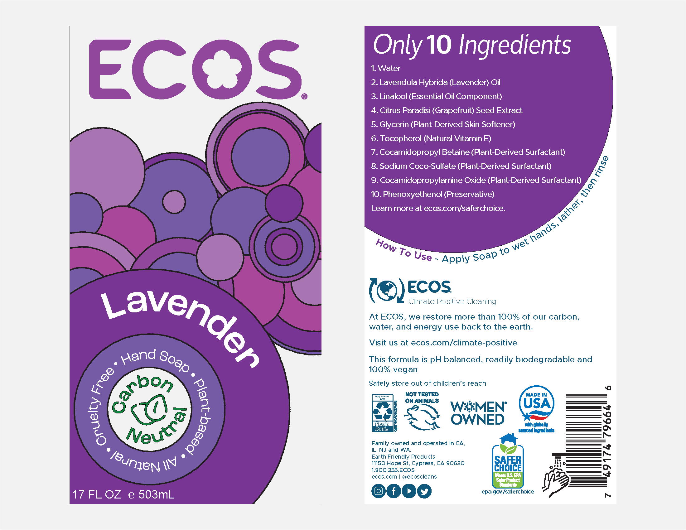
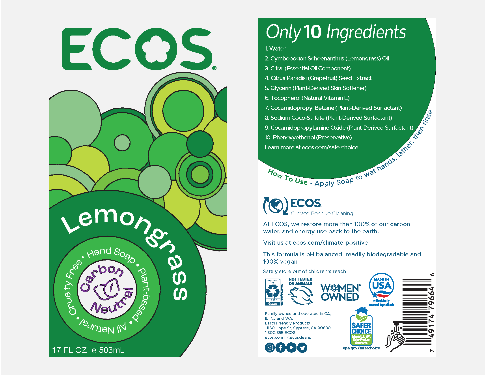

Ecos Hand Soap
I was tasked with creating a label design that accurately reflects the brand's commitment to sustainability and eco-friendliness. Ecos Hand Soap is made with a plant-based formula and is free of harsh chemicals, making it gentle on the skin while still being tough on dirt and germs.

To create a label design for Ecos Hand Soap as a concept piece, I drew inspiration from the brand's rich history dating back to the 50s when it was founded and became a major company in the 60s. I wanted the new label to reflect the nature-focused approach that some people began to embrace during that era. For the design, I looked to artists like Milton Glaser, but I made sure to tone down the psychedelic aspects of their works. The circular designs on the front of the label not only pay homage to mid-century pop art but also resemble suds from the soap itself.
   